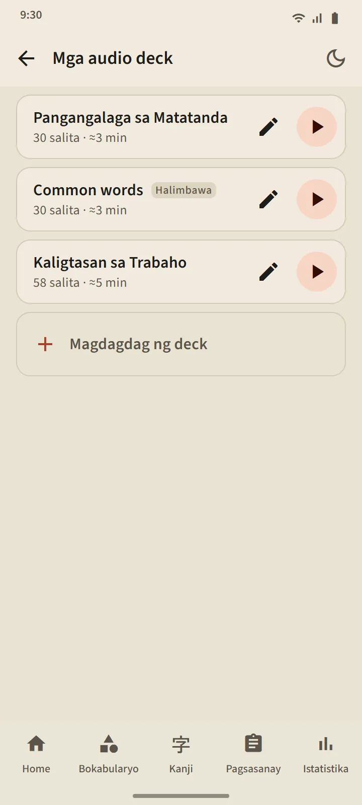

Mga audio deck na ikaw ang gumagawa
Gumawa ng deck na may 5 hanggang 100 salita: maghanap nang isa-isa, o kunin nang maramihan mula sa anumang deck ng bokabularyo. Binabasa ng player ang bawat salita sa Japanese, na sinusundan ng kahulugan nito sa wika ng app (i-off ang "Basahin nang malakas ang kahulugan" para Japanese lang). Ipinapakita nang malaki ang kasalukuyang salita na may furigana; i-tap ang isang salita sa listahan para lumundag dito.
Mga kontrol: shuffle, ulit, at bilis na 0.75×, 1×, o 1.25×. Tuloy ang player kahit mamatay ang screen o lumipat ka ng app; ang notification ng player at ang mga button ng headset ay nananatiling may kontrol.
- Libreng bersyon: 3 deck. Premium: walang limitasyon, at maaaring i-download ang isang deck bilang iisang audio file (M4A).
- Awtomatikong ginagawa ang isang sample na deck, ang "Common words", mula sa mga pinakamadalas na salita; i-edit o burahin ito ayon sa gusto mo.
- Hindi kailanman binabago ng pakikinig ang iskedyul o yugto ng isang salita.


Pagsasanay sa bigkas: sabihin ito, at tuloy na
Lumalabas sa isang card ang salitang Alam na o Nabisado mo na; kusang bubukas ang mikropono, sasabihin mo ang salita, at kapag nakilala ito ng phone mo, lalabas ang susunod. Kung hindi, ipapakita ng screen ang narinig nito at makikinig muli; pagkatapos ng tatlong subok, magpe-play ito ng halimbawa. Laging nandiyan ang button ng mikropono, ang button ng halimbawa, at Laktawan. May 5, 10, 15, o 20 salita ang isang session.
Pinoproseso ng speech-recognition service ng phone mo (karaniwang sa Google) ang boses mo; hindi ito nire-record o sine-save ng app. Ang salita lang ang hinuhusgahan, hindi ang punto mo. Dahil maaaring magkamali ng dinig ang speech recognition, ang pagsasanay na ito ay hindi kailanman nagpapababa ng yugto ng isang salita.

Pagsulat ng kanji: isa-isang stroke
Para sa mga kanji na Alam na o Nabisado mo na. Kahulugan at mga pagbasa lang ang ipinapakita; susulat ka sa isang kahon na sumasakop sa buong lapad, at sinusuri ang bawat stroke kapag iniangat mo ang daliri mo: hugis, direksyon, at pagkakasunod-sunod. Ang tamang stroke ay kusang lumalapat sa karaniwang hugis; ang maling pagkakasunod-sunod o baligtad na direksyon ay tinatanggihan na may isang pangungusap; pagkatapos ng dalawang mali, lilitaw nang mahina ang susunod na stroke kasama ang panimulang punto nito.
- Mula sa alaala: walang laman na kahon. May anino: mahinang nakikita ang kanji, para sa pag-init. I-tap ayon sa ayos: ipinapakita nang buo ang kanji; i-tap ang mga stroke nito ayon sa pagkakasunod-sunod.
- Maaaring i-play anumang oras ng button na Animasyon ang buong pagsulat ng kanji.
- Itinuturing na kaya nang isulat ang isang kanji kapag naisulat mo ito mula sa alaala nang walang tulong sa dalawang magkaibang araw; 5, 10, o 15 kanji bawat session.


Pagbigkas saanman
Ang mga card ng bokabularyo, kanji card, detalye ng salita, aralin sa kana, halimbawa sa balarila, at tanong sa pakikinig ay binabasa lahat ng Japanese text-to-speech engine ng phone mo, kaya walang audio file na kailangang i-download. Sumusunod ang kalidad ng boses sa engine ng bawat phone.